#For Chrome Browser
Open the chrome browser
1.Click the 3dots option
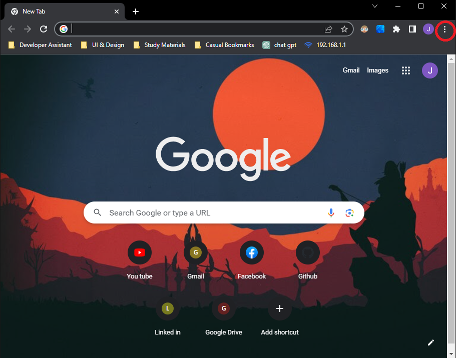
2.Select the "More tools" option then select "Clear browsing data"
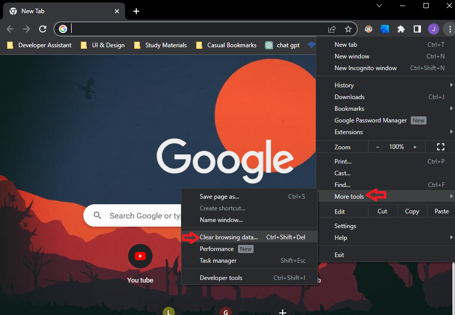
3.Select the "Advanced" then select Time range "All time" then select all the checkbox and click clear data.
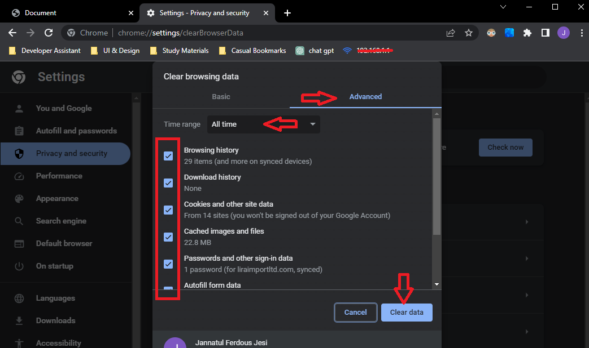
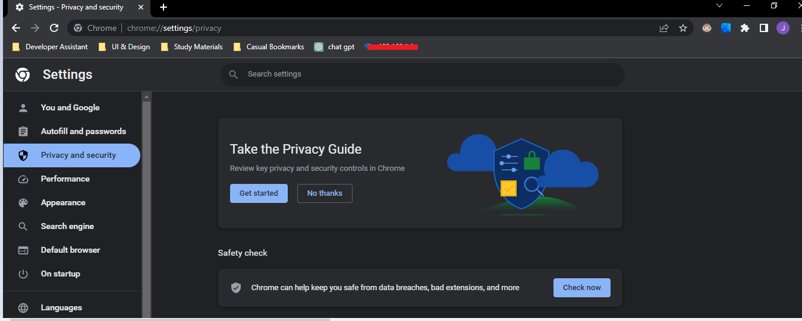
4.Search Parbatipur Govt. College
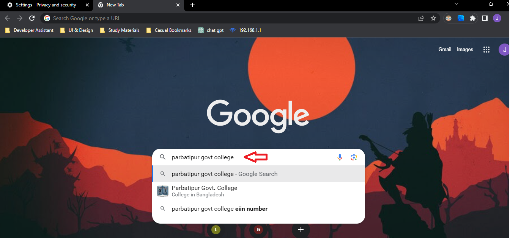
5.Go to the website and refresh the website.
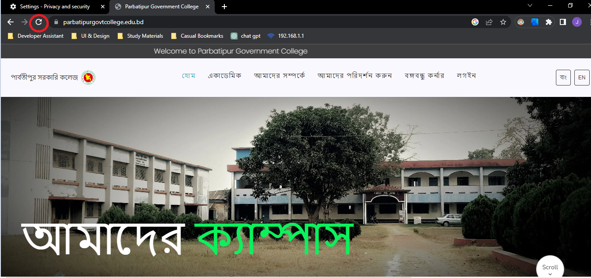
#For FireFox Browser
Open the FireFox browser
1.Click the 3dots option
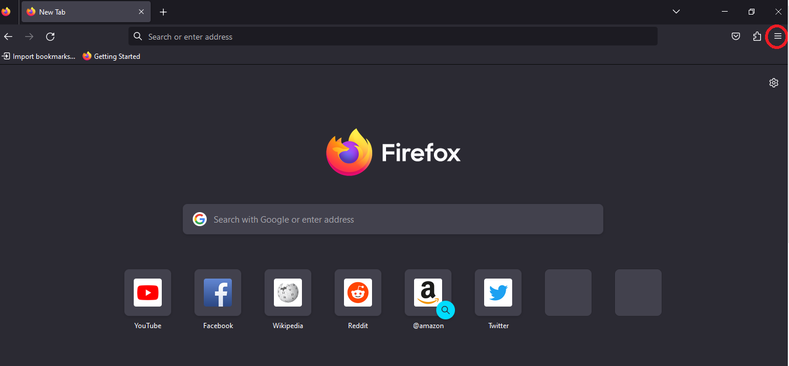
2.Select the "History" option.
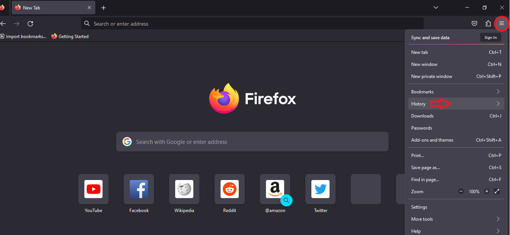
3.Select "Clear recent history".
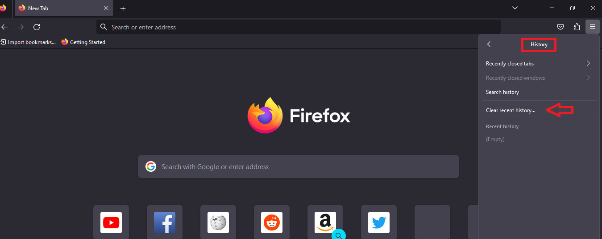
4.Select the Time range to clear "Everything" then select all the checkbox and click "Clear Now".
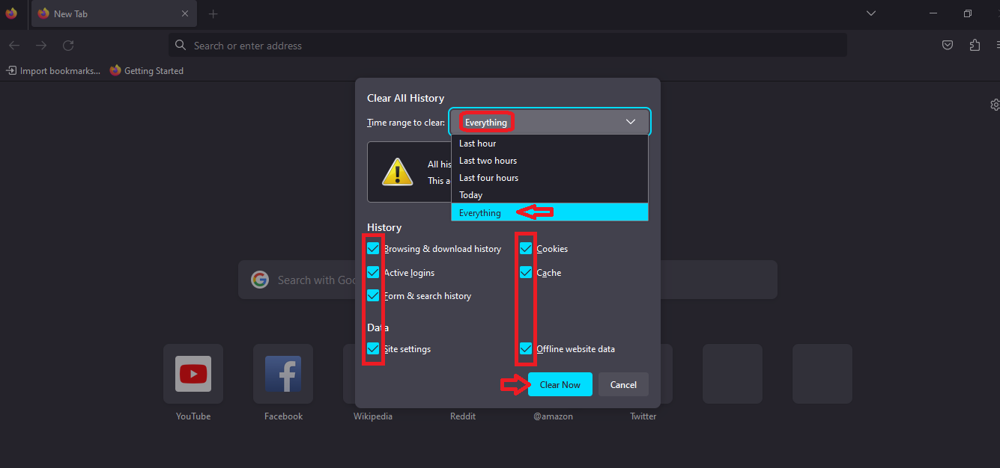
4.Search Parbatipur Govt. College
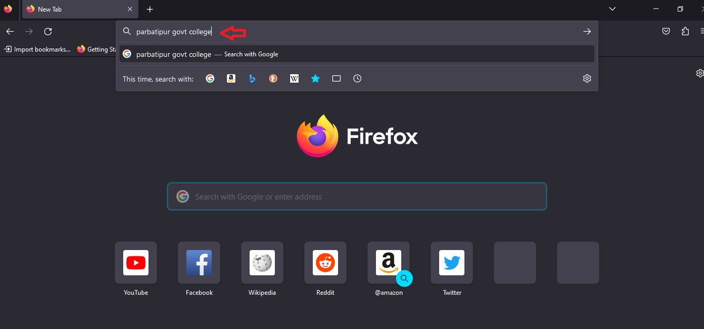
5.Go to the website and refresh the website.
#For Chrome Browser for Mobile Phone
Open the chrome browser
1.Click the 3dots option
2.Select the "More tools" option then select "Clear browsing data"
3.Select the "Advanced" then select Time range "All time" then select all the checkbox and click clear data.
4.Search Parbatipur Govt. College
5.Go to the website and refresh the website.